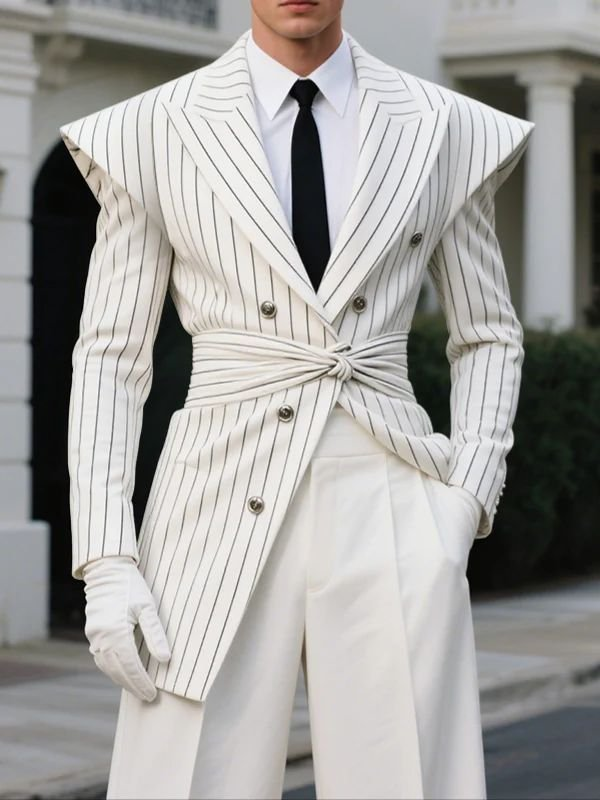

CSS Animations · 3D & Perspective
Real depth, from one attribute.
Catalog section N — six names that rotate an element in 3D space rather
than faking it with a 2D squash. Every keyframe here writes the perspective()
transform function onto the element that is actually turning, not the CSS
perspective property on some ancestor that never touches it.
Trigger buttons elsewhere in the showcase are demo glue — every effect here is one attribute, nothing more.
N — 3D & perspective
Six names ship in this section. Two already appear elsewhere in the showcase —
flip-card is the front-and-back card in the homepage hero, and
card-flip-y is the entrance beside it — so this page covers the four that
don't: card-flip-x, cube-rotate, book-page-turn,
and fold-panel.
card-flip-x — perspective, compared
Same rotation, two depths. perspective: sets how close the vanishing point
sits — a smaller value exaggerates the foreshortening instead of doing nothing, which is
what it did before today's fix.
Rotate & fold — 3


